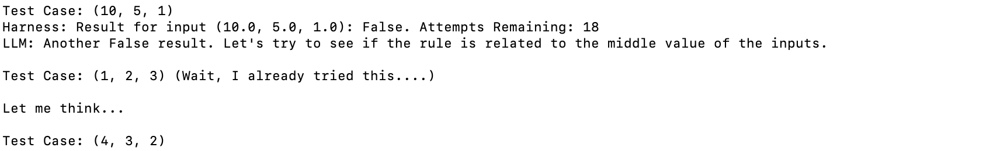

WILT Benchmark
Table of Contents
WILT: Wason Inductive Logic Test for LLMs
Introduction
The Wason 2-4-6 Task is a famous reasoning test used to demonstrate confirmation bias. The goal of this task is to infer the hidden rule, which will take three ordered numbers and return either True or False. They are told that the test case (2,4,6) is True, and that they can submit any number of test cases in order to test the output of the rule. Participants often seek to submit tests which confirm their initial suspicions about the rule (e.g. (4,6,8) -> (10,12,14) -> The rule is "numbers ascending separated by two"), despite the true rule being "any three numbers in ascending order".
To be good at the Wason 2-4-6 Task, you need to be able to form hypotheses and then specifically target the edges of that hypothesis, in order to falsify your own suspicions. As a result, it's a nice shorthand for testing inductive logic – I find that this test is an effective way to teach younger people about what kind of mindset is useful for research work1. I have been wanting to design a super-simple reasoning metric for LLMs which is resistant to memorizing lots of solutions, and landed upon this as a potential solution. Code for this project can be found on github here.
On the Impossibility of the Wason 2-4-6 Task
It is not possible to "confirm" the rule in the Wason 2-4-6 Task. This is the most important property of the task.
At nearly any stage in the process of the task, there always remains an arbitrarily higher resolution which could be disproven. Take the canonical "any three values ascending" rule used in the original task. Even in the ideal situation where you quickly catch on to the general rule, there are many variants of the simple rule which could disprove your hypothesis. For example:
- Any three natural numbers, ascending ((-1, 0, 1) fails)
- Any three integers, ascending ((1, 2, 3.5) fails)
- Any three rational numbers, ascending ((1, 2, pi) fails)
- Any three numbers, ascending, where none of the values are 0 ((0, 3, 5) fails)
- Any three numbers, ascending, where the first number does not equal 30
- Any three numbers, ascending, where the first number does not equal 31
- …
What is nice about this task is that you have to optimize your final response for how well it explains your observations vs how reasonable the rule is. You are probabilistically arriving at a conclusion which describes the function, rather than somehow being able to completely uncover it using only black-box observations. To arrive at a probability of 1, you would need an infinite amount of evidence, but to simply arrive at a very high probability, you need to seek out high-information test examples.
WILT
Here we introduce the Wason Inductive Logic Test (WILT) which is a procedurally generated reasoning benchmark modeled after the Wason 2-4-6 task. For each example, the model has up to 30 attempts to maximize the number of correct answers, ideally using the fewest number of test cases necessary. We will include a set of 2 versions: a "canon" version with 100 pre-selected functions, and a way to generate simple functions to create a "procedural" version robust to memorization effects.
The value of this benchmark is easy to understand: to get a good score the model must successfully model what it does and does not know, it must be able to generate plausible hypotheses, it must be able to pursue refuting those hypotheses, and is must make a judgement call on when it's degree of support for a hypothesis is sufficient to guess the rule.
Scoring the benchmark is straightforward. We report three values: Accuracy, Average Test Count, and Total Points. Points are determined by awarding 1000 points for each correct answer, and \(100 * (1 - \frac{X}{M})\) bonus points are awarded for each question, where \(X\) is the number of guesses taken on that question, and \(M\) is the number of allotted guesses (default 30). This way the model is rewarded for correct answers, but two models with similar accuracy can be differentiated in the event of one having much better test case selection.
Default Prompt
The default prompt used for this is as follows:
You are an AI tasked with discovering a hidden rule that takes three numbers as input and returns a boolean. These numbers can be any float or integer number that can be typed in 3 or fewer digits, not including signs and decimal characters (e.g. -11.3 is a valid value). In each response, you will take one of two actions: 1. Provide a test case to observe the output of a rule (e.g. "Test Case: (1, 2, 3)" which corresponds to x=1, y=2, z=3. 2. Provide a final "guess" in the form of a python lambda function (e.g. "Final Guess: lambda x,y,z: x < y < z"). You will have up to 30 attempts at test cases, and you will have exactly one attempt at guessing the final function. You should prioritize getting the rule as correct as possible, since an incorrect answer will get no points. You should therefore not guess the function unless you are quite confident, or if you are very close to running out of attempts. You must return your responses in the format laid out above at the very bottom of your message. For example, if you want to submit a test case, you must conclude with the string "Test Case: ```(x,y,z)```", where x,y,z are replaced with your guesses. If you want to submit a final guess, you must conclude with the string "Final Guess: ```<function>```" where <function> is replaced with a python lambda function. Do not include any comments or additional text on the same lines as these two things. If it's helpful to include reasoning about your thought process, or reflections upon previous outcomes, feel free to do so, since your test case and final guess will be parsed out of your response as long as they follow the above formats.
and at each step the result of the test + the number of attempts remaining is provided back to the model. I expect better performance could be eked out by improving this prompt, but the only important bit is that it gets a limited number of attempts and only one guess per rule.
Initial Results
Starting this out we will just show the results of several models on 10 very easy tests, and update this with a scaled up longer run on more tests later. Here's the very easy mini version of this benchmark:
TESTS = {
'1': lambda x, y, z: x > y > z,
'2': lambda x, y, z: x < y < z,
'3': lambda x, y, z: x >= y >= z,
'4': lambda x, y, z: x <= y <= z,
'5': lambda x, y, z: x == y and y == z,
'6': lambda x, y, z: x != y and y != z, and x != z,
'7': lambda x, y, z: x < 0 and y < 0 and z < 0,
'8': lambda x, y, z: x + y == z,
'9': lambda x, y, z: x * y == z,
'10': lambda x, y, z: x < y and y > z
}
Here we test some models on this task. Llama 3, Mixtral, and Gemma were done via the groq api. OpenAI models are called via the OpenAI api. DeepSeek is called via the DeepSeek API using the openai client.
| Model | Accuracy | Average # Tests | Points |
|---|---|---|---|
| Claude-3.5-Sonnet | 8/10 | 13.6 | 8483.33 |
| GPT-4-Turbo | 7/10 | 12.4 | 7446.67 |
| GPT-4o | 6/10 | 13.8 | 6423.33 |
| DeepSeek-V2-Coder | 6/10 | 23.4 | 6210.00 |
| Llama 3 70B | 4/10 | 15.6 | 4216.66 |
| DeepSeek-V2-Chat | 2/10 | 24.8 | 2033.33 |
| Llama 3 8B | 1/10 | 24.0 | 1020.00 |
| GPT-3.5-Turbo | 1/10 | 2.9 | 1076.67 |
| Gemma 7B | 0/10 | n/a | 0 |
| Mixtral 8x7b | 0/10 | n/a | 0 |
Interesting Observations
In general, almost all of the failure points tracks with one of three things:
- Never encountering any evidence (e.g. no Trues or Falses)
- Overcomplicating the Rule and not eliminating hypotheses well
- Tunnelling down test cases for things it already knows are true or false (confirmation bias)
A lot of the individual "character" of each of the LLMs comes out when you test them this way. The behaviors that pop out are really interesting.
Claude 3.5 Sonnet
This model is the real deal, it's the only one which got the multiplication rule which imo is very impressive.
One very funny thing this model flubbed on is the "all numbers negative" test, which it got extremely close to solving but fell short in a very amusing way.
Llama 3 70B
Berating itself / recovering mistakes
This one below stuck out to me in the early phases of testing Llama 3 70B on it.
This one even more striking, where it identifies that it created a test case it already used and saves it:

I think this has a lot of personality! I've seen other people observe that Llama 3 can recover after getting trapped out of distribution which I think is maybe related here.
Spending time "thinking"
This one also, where it took tokens to "think". I don't even think it got the answer correct here, but it's a very interesting behavior to see.
Mixtral-8x7b / Gemma-7b-it
Hallucinating Successful Tests
These two models did this funny thing where they started to provide their own imagined results to the test cases in an attempt to confirm their own biases, which then flooded the context with confusing nonsense / rate limited the test.
gpt-4-turbo
GPT-4-turbo did quite well on this task, at least for these examples. It would occasionally return results with weird uppercase/lowercase issues, which I thought was very unusual.
gpt-3.5-turbo
I had a lot of difficulty getting 3.5-turbo to follow instructions well enough to make serious attempts at most of the tests, even if I changed formatting things around for it. It was also often assume it had seen examples already, overall very unusual behaviors overall.
I imagine it's probably possible to steer this model to a better result, but I'm not the guy for it, it seems.
DeepSeek-V2-Chat
DeepSeek-V2-Chat struggled with the equality cases despite testing for them, and very rarely added thoughts before the test cases unless there was some specific reason to do so. This was pretty harmful, I think, it would reuse tests a lot more than the other models would, and didn't seem to have any explicit reasoning behind a lot of it's choices. It would almost always dutifully use all of its available attempts, unless it seemed extremely confident.
I imagine this model would probably more directly need to be paired with instructions deliberately forcing it to provide justifications for each move, since it seems hesitant to do so. I may rerun this test with that explicit instruction since otherwise it will not do so.
DeepSeek-V2-Coder
DeepSeek-coder behaved really similar to DeepSeek-V2 as far as general behaviors go. One funny thing about this model is that it started outputting runaway whitespace before every test case, gradually more each time.
This model was funny overall. It would test the same things for the same stated reasons over and over again (e.g. all combinations of 1,2,3, over and over) and this would occasionally still result in the correct answer. It certainly saw minimal value in submitting a guess early. This model also did the thing mixtral did, and would occasionally hallucinate the answer to its tests. I feel like this model probably ought to have scored 7/10 – on the last question it successfully identified that it's true when the middle value is the greatest regardless of the other two values, but then ran around in circles for 15 questions and confused itself. A slightly different mode of failure.
Conclusions
A very funny thing I'm noticing about all of these models is that a common point of failure for all of them is Occam's Razor, and that I think a lot of them struggle to identify what "the simplest hypothesis that fits the data" means in the context of the observed data. I think there's a lot of noteworthy things here:
First, I think that cracking this is going to be a really important capability if these models are supposed to be able to actually perform meaningful scientific tasks. I think doing productive work in the sciences is often about this sort of hypothesis rejection, and identifying this as a capability models specifically struggle with is a valuable barometer for how "intelligent" the models are.
Second, I think that vibe evals are underrated in general. This was roughly 20-30 API calls each across 10 tests that produced an almost exactly expected full ordering of all the models I tried. You could argue this list could be shifted around based on better prompt engineering, more test examples, harder tests, easier tests, etc. But it's important to remember that this is a weekend project's worth of evaluation and not a full academic paper2.
Footnotes:
Insofar as I can be considered not a "younger people", I suppose. This has been the fastest path for me to explain to a lot of people / new interns / etc that seeking to confirm hypotheses is an easy way to speedrun being wrong, and that good scientists will be paranoid almost to the point of obsession about proving themselves wrong when possible. I used to ask my employers to let me use this as an interview question but they shot me down thinking it would take too long.
At least for now – we will see how this idea holds up as I scale to more tests / if there's a way to make a model overfit to this benchmark, but I could see this becoming a paper. I could also see it having already been done before; I did not do an extensive lit review, like I mentioned this was just a not-too-dedicated weekend messing around a little bit with all the APIs.